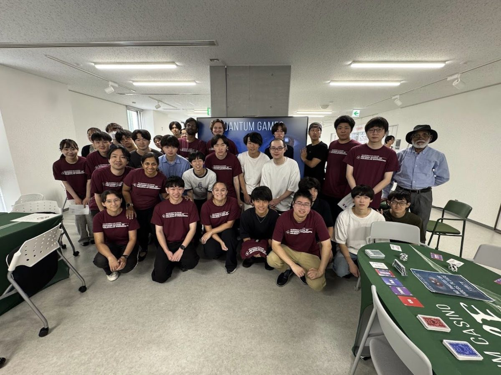
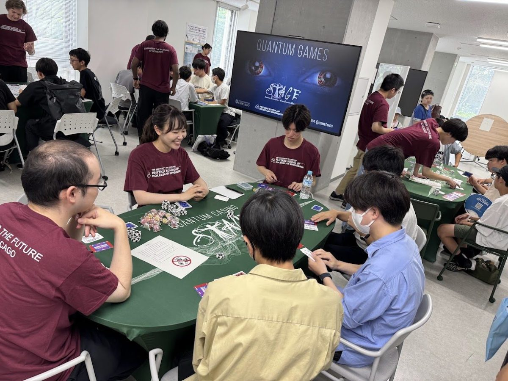

Past Event
Outreach
CTQA at Tohoku University Open Campus 2026
Overview
About the Exhibit
Members of the Chicago-Tohoku Quantum Alliance presented Quantum Games at Tohoku University Open Campus 2026, introducing ideas from quantum mechanics and quantum information science through card and digital games.
STAGE Center members from the University of Chicago and students from the Fukami-Kanai Laboratory jointly facilitated the six games and engaged visitors through accessible, hands-on activities.
Event Photos

